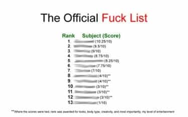

< < < Back
8 Signs You Should Break Up With A Girl – Return Of Kings
Whether he wants to admit it or not, even the most inveterate bachelor (a.k.a. “player”) parks his game from time to time to concentrate on one girl. Even if he is creeping a little on the side, he’s no longer actively pursuing new prospects in volume, no longer maintains an active rotation, and he’s seeing the same chick in regular intervals. In other words: he’s in a long-term relationship.
Perhaps more than any other subject, there’s some serious silence in the “game” world about how to think about and deal with relationships. It’s our Don’t Ask Don’t Tell. And, like two muscular dudes jerking each other off in the army latrine, we know guys are doing it, but the last thing we want to do is think about or discuss it.
If you associate with men with game, you already know how it goes down: periodically, a guy you know will disappear for a more-than-normal period of time, only to re-emerge a few months later, coming clean that he’s been holding hands with a girl the whole time. You shrug your shoulders and all is well again.
I’m from the camp that thinks that—despite the ever-diminishing returns of a relationship and the ever-shrinking pool of eligible girls—it’s good to get into one here and there. For one, constantly chasing new girls can get bone-tiring, as well as massively drain your time and resources. And that’s just from the going-out part. The administrative elements of being a full-time bachelor—managing phone numbers, keeping track of contact intervals, turning on a dime to work each girl according to what stage you have her in, even the timing of your ejaculation schedule—is never-ending behind-the-scenes work that can wear you down and take the fun out of being single.
Periodically resting from all of this for a few weeks or months at a time is not only desirable, but necessary, to recharge your batteries for new adventures. Not only that, there are actually some rewards that you reap from a relationship girl that you rarely get from a standard rotation member. To paraphrase Chris Rock, “new pussy can’t cook.”
The major problem with relationships is that 95 percent of guys stay in them long after the law of diminishing returns has tipped against their favor. They fail to manage their relationships properly and to spot signs along the way that things have irretrievably soured. That said, here are eight signs you should break up with your girl…
1. Gains an appreciable amount of weight.
Minor, temporary fluctuations in weight are understandable, even excusable, but anything beyond 8 or 10 pounds—especially without increasing anxiety and action about it—is a sign that she cares little about her appearance and, more importantly, cares little about what you think.
2. Talks about her (sexual) past.
In my world, I consider anything beyond a passing mention of her sexual past (especially without some clear pertinence to the conversation and an obvious attempt to courtesy-veil or massage it in a tactful way) a red flag going in, so chances are, if she’s talking about it now, it marks some sort of a change. A girl cavalierly talking about her past is a sign of crass indifference toward sex (sluttiness), at best, or intentional disrespect, at worst. In either case, it’s a deal-breaker for any kind of serious relationship.

3. Insists on having contact with her ex-boyfriends.
This is related to talking about her past, but is actually much worse. In the era of Facebook and 24/7 Internet connectivity, it’s become nearly impossible for these guys to fully disappear into the past, but active contact—especially face-to-face—should prompt an ultimatum conversation. If you know anything about women, you can predict her stubborn reaction. In my case, that conversation ends with me severing ties.
4. Cuts her hair short.
Like gaining weight, cutting her hair signals bigger problems. I’m a firm believer that the short haircut in women is a political statement. By willfully removing one of the clearest cues of femininity, she’s shoving a huge middle finger at men, in general, and—if you happen to be in a relationship with her—at you, in particular.
5. Develops a bitchy, snappy attitude. Disrespects you publicly.
A girl who routinely gives you attitude—especially publicly—has lost all respect for you. If you’ve let her intransigence slide more than, say, once, she’s further lost respect for you. Nine times out of ten, this is symptom she will either dump you—or, frankly, cheat on you—soon.
6. Hangs out or communicates with way too many dudes.
I consider the “all-my-friends-are-guys” declaration to be a deal-preventer. That is, I will have likely learned about her dozens of male orbiters—and eliminated from consideration as a result—well before I’ve upgraded her status in my life. That said, discovering this anywhere along the way is an automatic two-and-and-half strikes. Short of some verifiable signs that she doesn’t revel in stringing a bunch of men along, doesn’t keep a bench of ready replacements, or hasn’t banged several of them already, it’s a bootable offense.
7. Frequency or quality of sex declines markedly. Dangles sex as a reward.
Look, you’re probably not going to still be banging five times a night months into a relationship, but a sharp drop in frequency or quality means a vital element—physical chemistry—has evaporated. It’s especially problematic if she begins to wield sex as some sort of carrot that you “earn” by doing things “right.” She’s wrested power from you, and it’s a rare case where a man recovers from this.
8. Gets sloppy in her dress, habits, speech, or hygiene.
Like gaining weight, losing her gracefulness portends bigger problems. The moment a girl stops trying to impress you, she’s checked out of your relationship. Depending on how attractive she is, the next guy who hits that switch in her brain will be granted an interview for your job.
If this list makes it sound like every relationship is doomed from the start, you’re absolutely right. Being that in today’s (Western) world, one or several of these are eventualities, the best a top-rate man can hope for is extended periods of bachelorhood punctuated by rewarding, time-limited relationships that end right as the returns diminish to an unacceptable level. That length of time, needless to say, varies dramatically from girl to girl.
Read Next: 5 Ways to Land (And Keep) A Quality Boyfriend


{kind=link}
{kind=link}
{kind=link}
{kind=link}
{kind=link}
{kind=link}
{kind=link}
{kind=link}
{kind=link}